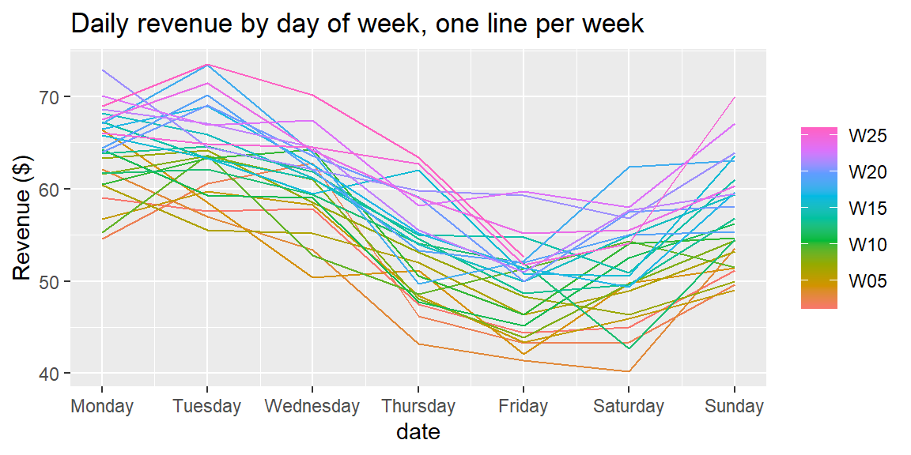
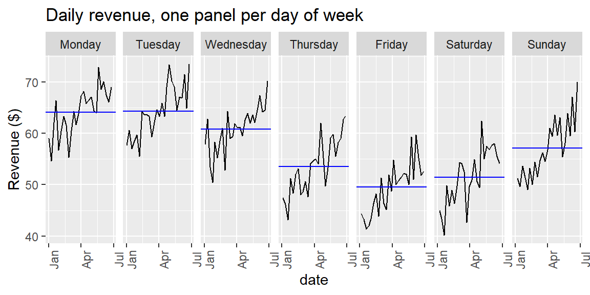
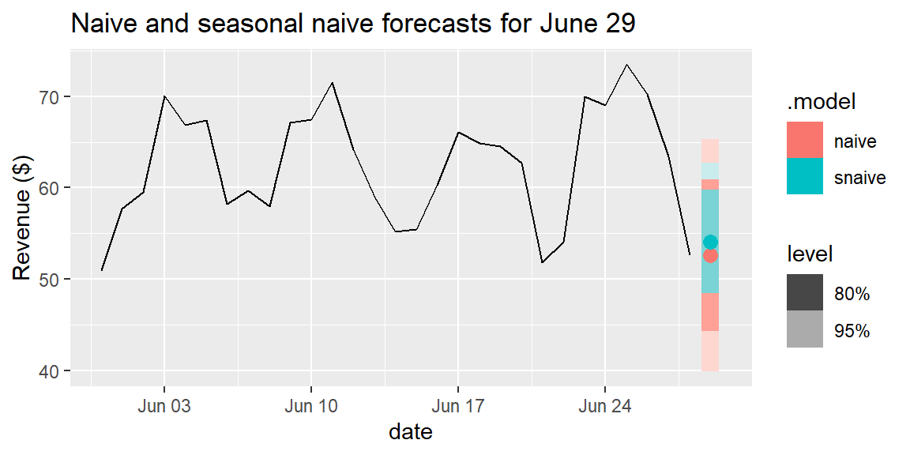

29Week 12: Time Series Structure, Trend, Seasonality, and Naive Forecasts
29.1 Why This Matters
Module 4 built models that predict one variable from others, order didn’t matter, any row could have been shuffled without losing information. Forecasting is a special, extremely common case of the same “build a model” step (Chapter 2), but with one crucial difference: the goal is predicting a variable’s own future values from its own past, and the order of observations is the whole point. A retailer forecasting next month’s sales, a call center forecasting next week’s volume, a hospital forecasting next quarter’s admissions, all of these are asking the same kind of question: given what happened up to now, what’s likely to happen next?
Recall from Chapter 25 that ordinary regression assumes independence, observations don’t influence one another. Time-ordered data breaks that assumption almost by design: yesterday’s sales genuinely help predict today’s. Rather than fighting this dependence, forecasting methods are built specifically around it, and this module uses a set of R tools purpose-built for exactly that job.
29.2 Introducing the fpp3 Package
Every regression tool so far has come from base R or the tidyverse. Time series data has enough special structure, an explicit order, gaps that need to be handled carefully, seasonal cycles, that it benefits from its own toolkit. fpp3 is that toolkit: it’s the companion R package to Hyndman and Athanasopoulos’s textbook Forecasting: Principles and Practice (3rd edition), the standard reference this module draws on.
Like tidyverse, fpp3 isn’t really one package, it’s a collection of packages loaded together, sometimes called the tidyverts (a play on “tidyverse” for time series):
tsibble: a time-series-aware version of a tibble, the data structure everything else builds on.
feasts: Feature Extraction And Statistics for Time Series, tools for visualizing and decomposing series (what this section uses).
fable: Forecasting models in a tidable framework, for fitting forecasting models (used starting later in this section, and throughout the rest of this module).
fabletools: shared infrastructure the modeling packages build on.
One library(fpp3) call loads all of them, along with the core tidyverse packages this course already uses. Everything in fpp3 is designed to work with the same dplyr-style pipes and ggplot2-style plotting already familiar from the rest of this course, time series just needs a few new, specialized verbs layered on top.
29.3 The tsibble: A Time-Aware Data Frame
The foundation of everything in this module is the tsibble (time-series tibble), created with as_tsibble() and an explicit index, the column that represents time.
ExampleExample 12.1: Building a tsibble
A coffee shop tracks daily revenue for 180 days (January 1 through June 28, 2024).
The [1D] in the printed output is tsibble confirming it detected a regular 1-day interval between observations, exactly the kind of structural check a plain tibble doesn’t do automatically. Once a data frame is a tsibble, the rest of this module’s tools know how to work with it directly.
autoplot() recognizes that coffee is a tsibble and automatically produces a line plot against time, no need to specify x and y by hand the way a raw ggplot() call would require. Two patterns jump out immediately: revenue drifts gradually upward over the six months (a trend), and it visibly rises and falls in a repeating rhythm within each week (seasonality).
29.5 The Components of a Time Series
Most business time series can be usefully thought of as a combination of three pieces:
Trend: the series’ long-run direction, upward, downward, or roughly flat, once short-term fluctuations are averaged out.
Seasonality: a pattern that repeats at a fixed, known frequency tied to the calendar (a weekly cycle, a monthly or quarterly cycle within each year). Critically, seasonality always repeats at the same interval; it’s not just “any repeating wiggle.”
Remainder (or irregular component): whatever’s left over once trend and seasonality are removed, the time-series equivalent of a regression residual.
The simplest way to combine these, additive decomposition, treats the series as a sum: \[
y_t = \text{Trend}_t + \text{Seasonal}_t + \text{Remainder}_t
\]
NoteWhen seasonality isn’t additive
Additive decomposition assumes the seasonal swing stays roughly the same size regardless of the series’ overall level. If a series’ seasonal ups and downs grow proportionally as the series itself grows, a multiplicative decomposition fits better. This course focuses on the additive case, but recognize the symptom, a seasonal pattern that visibly grows or shrinks alongside the trend, if you encounter it.
29.6 Seeing Seasonality Two Ways
feasts provides two purpose-built plots for inspecting seasonality directly, before any formal decomposition.
ExampleExample 12.3: A season plot
coffee |>gg_season(revenue, period ="week") +labs(title ="Daily revenue by day of week, one line per week", y ="Revenue ($)")

Each line traces one calendar week, colored from early (orange) to late (pink) in the data. Despite six months of week-to-week variation and an overall upward drift, every line traces the same basic weekly shape: high on Monday and Tuesday, a steady decline into Friday, then a partial recovery over the weekend. That consistency across differently-colored lines is exactly what real seasonality looks like.
ExampleExample 12.4: A subseries plot
coffee |>gg_subseries(revenue, period ="week") +labs(title ="Daily revenue, one panel per day of week", y ="Revenue ($)")

Each panel isolates one day of the week across all 26 weeks, with a horizontal blue line marking that day’s average. The panels’ heights tell the seasonal story directly (Monday and Tuesday sit noticeably higher than Friday), while the upward drift within each panel shows the trend still holding separately for every day of the week.
29.7 Formal Decomposition with STL
feasts formalizes what Examples 12.3 and 12.4 already showed visually with STL (Seasonal and Trend decomposition using Loess), fit like any other model in the tidyverts framework: with model().
The panels read top to bottom: the original series, the extracted trend (smoothed, gradually rising from about 52 in January toward 65 by June), the repeating weekly seasonal pattern, and whatever’s left over. This is the same story as Examples 12.2–12.4, now split apart into one picture, and computed automatically rather than by hand.
29.8 Naive Forecasts
The simplest possible forecasting method, the naive forecast, predicts that the next period will equal the most recently observed value: \[
\hat{y}_{T+1} = y_T
\] It ignores trend and seasonality entirely, and yet it’s a surprisingly important benchmark: any more sophisticated method (moving averages, exponential smoothing, or regression-based forecasting, all coming in the rest of this module) should be judged by how much better it does than this trivial baseline. A method that can’t beat the naive forecast isn’t adding value.
29.9 The Seasonal Naive Forecast
When a series has clear seasonality, a small but important upgrade is the seasonal naive forecast: predict the next period using the value from the same point in the last full seasonal cycle, rather than just the most recent observation: \[
\hat{y}_{T+1} = y_{T+1-m}
\] where \(m\) is the length of one seasonal cycle (\(m=7\) for a weekly cycle in daily data).
ExampleExample 12.6: Fitting NAIVE() and SNAIVE() with fable
The fable package fits both models the same way you’d fit a regression, with model(), and produces forecasts with forecast():
fit <- coffee |>model(naive =NAIVE(revenue), snaive =SNAIVE(revenue) )fc <- fit |>forecast(h ="1 day")fc |>hilo(level =95)
# A tsibble: 2 x 5 [1D]
# Key: .model [2]
.model date
<chr> <date>
1 naive 2024-06-29
2 snaive 2024-06-29
# ℹ 3 more variables: revenue <dist>, .mean <dbl>, `95%` <hilo>
Both methods forecast Saturday, June 29. The plain naive forecast uses Friday’s revenue, $52.60, with a wide 95% interval of about \((\$39.90, \$65.30)\). The seasonal naive forecast, last Saturday’s actual revenue of $54.10, comes with a noticeably narrower interval, about \((\$45.50, \$62.70)\), because it accounts for the fact that tomorrow isn’t just “another day,” it’s specifically a Saturday, and using that information produces a more precise forecast, not just a different one.
fc |>autoplot(coffee |>filter(date >as.Date("2024-05-30"))) +labs(title ="Naive and seasonal naive forecasts for June 29", y ="Revenue ($)")

ImportantNaive forecasts are baselines, not final answers
Neither naive method uses trend information, and the seasonal naive method still ignores everything except one specific past value. Their entire purpose in this course is to set a floor: if a more sophisticated forecasting method from the rest of this module can’t outperform a naive or seasonal naive baseline, that’s a real finding, not a technicality, and it should change what method you actually use in practice.
29.10 Naive Forecasts in Excel
fpp3 is an R-only toolkit; Excel has no equivalent package, but the two simplest forecasts translate directly into cell references:
=B180 ' naive forecast (last observed value)
=B174 ' seasonal naive forecast (value from 7 rows, one week, earlier)
29.11 Recap
Keyword
Definition
fpp3
An R meta-package (the “tidyverts”: tsibble, feasts, fable, fabletools) built for time series analysis and forecasting, companion to the Forecasting: Principles and Practice textbook.
tsibble
A time-series-aware data frame, created with as_tsibble(index = ...), that explicitly tracks the time index and its interval.
Trend
The long-run direction of a series, apart from short-term fluctuations.
Seasonality
A pattern that repeats at a fixed, calendar-tied frequency (e.g., weekly, yearly).
Remainder (irregular component)
Whatever’s left in a series after trend and seasonality are removed.
gg_season() / gg_subseries()
feasts plots for visually inspecting seasonality before any formal decomposition.
STL decomposition
feasts::STL(), fit via model(); splits a series into trend, seasonal, and remainder components.
Naive forecast
\(\hat{y}_{T+1} = y_T\); fable::NAIVE(). Predicts the next period equals the most recent observed value.
Seasonal naive forecast
\(\hat{y}_{T+1} = y_{T+1-m}\); fable::SNAIVE(). Predicts the next period equals the value from one full seasonal cycle earlier.
29.12 Check Your Understanding
NoteProblems
A hotel’s occupancy data is collected once per quarter for the past 10 years. Is this a time series? What would make it inappropriate to analyze with the cross-sectional regression tools from Module 4 alone?
A company’s monthly sales rise every November and December, then fall back each January, in a pattern that repeats every year at roughly the same size. Is this trend, seasonality, or remainder? Explain.
What is a tsibble, and what does it check for that an ordinary tibble does not?
A retailer’s daily foot traffic has \(y_{100} = 420\) visitors. Using the naive forecast, what is \(\hat{y}_{101}\)? If the data instead shows a strong day-of-week pattern with a 7-day cycle, and \(y_{94}=460\), what would the seasonal naive forecast for day 101 be instead, and why might it be preferred here?
Explain, in your own words, why a forecasting method that fails to beat a naive or seasonal naive baseline is not a good candidate for actual use, even if it seems more “sophisticated.”
TipSolutions
Yes, this is a time series: it’s the same variable (occupancy), recorded at regular, ordered intervals (quarterly). Cross-sectional regression tools from Module 4 generally assume independence between observations; quarterly occupancy readings from the same hotel are very likely correlated with recent quarters (a busy summer is often followed by a comparatively busy fall), violating that assumption and calling for time-series-specific methods instead.
This is seasonality: it repeats at a fixed, calendar-tied interval (every November/December, every year) and returns to roughly the same size each cycle, exactly the definition distinguishing it from trend (a persistent long-run direction) or remainder (leftover, non-repeating noise).
A tsibble is a time-series-aware data frame, created with as_tsibble() by declaring an explicit time index column. Unlike an ordinary tibble, it checks that observations are spaced at a regular interval (and reports that interval, like the [1D] seen in Example 12.1), a structural check specific to time-ordered data that a plain tibble has no concept of.
Naive forecast: \(\hat{y}_{101} = y_{100} = 420\). Seasonal naive forecast (using \(m=7\)): \(\hat{y}_{101} = y_{101-7} = y_{94} = 460\). The seasonal naive forecast might be preferred if day 101 and day 94 fall on the same day of the week, since it accounts for a real day-of-week pattern that the plain naive forecast (which just repeats the most recent day, regardless of which day of the week that was) ignores entirely.
Naive and seasonal naive forecasts are simple by design, using little more than the last observation or the last seasonal cycle. If a more complex method (with more assumptions, more parameters, or more effort to build and maintain) can’t produce forecasts more accurate than these trivial baselines, the added complexity isn’t earning its keep, it’s not capturing any real pattern the simple method misses, and a business should prefer the simpler, cheaper method instead.